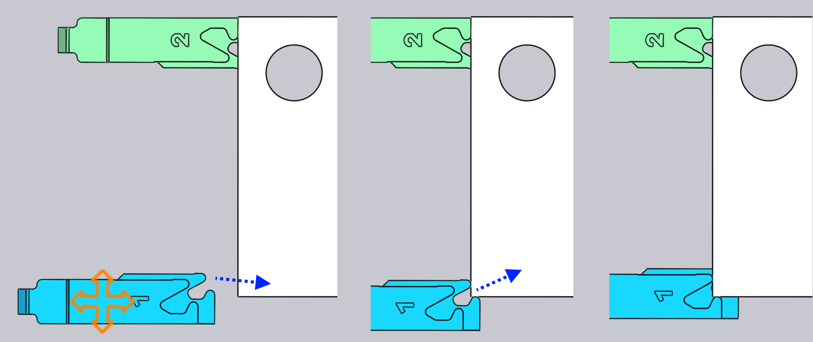

Edit the Back-Gauges
The back-gauge positions for each bend can be adjusted by just clicking on the back-gauge - this opens the Gauge panel, which is shown alongside.
The Gauge Panel
-
Use the Gauge selector to select the gauge you want to edit (you can also just click on the gauge, and the panel is displayed to edit that gauge.
-
The Z, X and R inputs are used to adjust the position of the gauges in three dimensions. For most press-brakes, the axes are as indicated in the image below:[1]
-
The Surface selector is used to engage a different surface of the gauging finger to the part. The set of surfaces available depends on the machine, and not all surfaces may be applicable for all bends ({appName} will inform you when a particular surface cannot be used). The image below shows different surfaces being used:
-
The Retract setting is used to set the gauge-retraction distance before bending. For some bends, the gauge has to be retracted (in the +X direction) by some distance after the part is pinched by the punch, but before it is bent (to avoid a collision). This setting is used to control the retraction distance. When you are editing this, {appName} actually retracts the gauge by the specified amount as a preview, so you can judge whether the retraction may be sufficient.
-
Use the Auto-Place button to ask {appName} to compute a position automatically for the specified gauge. In general, {appName} will have multiple gauging possibilities, and repeatedly clicking the Auto-Place button will cycle through those possibilities. To revert back to the default, close the gauge panel, click on the gauge again, and then click Auto-Place - the first position then selected is the default (that would also be the result of the original auto-sequencing and tooling).
-
Use the Flip Part button to insert the other side of the part into the machine and compute gauging afresh. This is similar to the Flip Part button in the bend panel.
Advanced
Here are some more advanced operations with the gauges:
Editing Gauging for Multiple Bends
It is possible to edit the gauge positions for multiple bends at the same time.
To do this, first select multiple bends by Shift+Click on the bend numbers in
the bend navigator. Then, click on a gauge. The image alongside shows the gauge
positions for bends 1, 2 and 4 being edited together:
In this example, the bends all use the same Z position for the gauge, and editing this position will adjust the Z position for all the gauges. The X and R position values are blank, since they are different for each bend. You can, however, type in an X or R value and it will be applied for all bends.
In general, you will rarely need to use this functionality. The gauge panel is aware of the limitations of a particular press-brake and will enforce all constraints required. For example, the R positions of the two gauges must be the same for some machines (they do not have independent R1 and R2 axes) - {appName} will ensure that when you edit the R position for one gauge, the other one is also adjusted immediately to track.
For some machines with 2-axes gauging systems, the Z positions of the gauges are set manually, and are not typically changing from bend to bend (since that would involve the operator having to manually adjust the gauges after each bend). For such machines, when Z position is set for one bend, it is set to the same for all bends. The collision status, gauge-engaged status etc are computed for all bends immediately, so it is very easy to find common Z1 and Z2 positions that may be acceptable for all bends.
Dragging Gauges
Though the exact gauging positions can be set by typing in Z, X and R values, it is often more simple to position the gauges just by dragging them into contact with the part.
-
Click once to select the gauge you want to drag.
-
Click on the selected gauge and drag to position it. Depending on the viewpoint, the gauge is dragged along either a horizontal or vertical plane.
Typically, you start with the gauge away from the part, and drag it towards the
part until it touches. You can continue dragging further (pushing the gauge into the part),
and a wireframe will continue moving, but the actual gauge stops when it touches the part.
The image above shows this in operation - we start dragging the gauge towards the sheet in the direction indicated by the arrow. As soon as the gauge touches the sheet, it stops, and just a wireframe representation continues moving (to show you where you are attempting to drag the gauge). This makes it easy to position the gauge so it is just touching the part without any gaps, and without any collisions.
In this image above, we are looking at the gauge from a viewpoint that is close to top down. So, the gauge moves in the XZ plane, and the R value of the gauge is kept constant. If you rotate the view to a more end on view, the gauge will move in the XR plane, and the Z value will be constant.
Clamp-Snaps while Dragging
By dragging the gauge, it is easy to precisely position the gauges when you are using one of the Stop type surfaces. When you are using one of the Clamp type surfaces, this is more difficult, since you have to engage both surfaces of a clamping finger against the part.
{appName} makes this easy by providing automatic snaps when the gauge is close
to a possible clamping position. To use this mechanism, first rotate the view
so you are seeing the gauges from top-down. Then, drag the gauges so the corner
you want to clamp fits near the aperture of the fingers:

The image above shows a clamping operation in progress. As we drag the gauges close to a clamping position, they snap into position at the Clamp 1 position (see image above, center). Dragging further, the gauges then snap into the Clamp 2 position (see image above, right). Note that the R value of the gauge is automatically adjusted up or down as we move to these different clamping snaps.